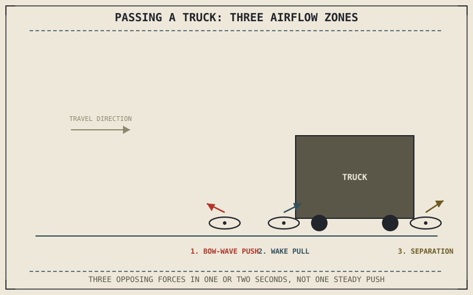

Being passed by a large truck at highway speed produces a distinctive, unsettling shove and pull that every experienced rider recognizes instantly — a burst of turbulent, uneven air hitting the motorcycle from the side, then releasing just as suddenly. Chapter 8.7 covered steady aerodynamic forces at constant speed; this chapter covers what happens when that airflow stops being steady at all.
Chapter 8.7 closed by naming this chapter's subject directly: aerodynamic stability and buffeting from gusts and turbulence.
Crosswinds and Sudden Gusts
A crosswind or sudden gust pushes against the motorcycle and rider's frontal and side area unevenly, generating a lateral force that acts somewhat like an unplanned, unwanted centripetal force pushing the bike off its intended line — except, unlike the cornering force Chapter 8.3 described, this force wasn't requested by the rider and isn't necessarily balanced by an appropriate lean angle when it arrives. A motorcycle's relatively small mass and large side profile, especially with luggage or a windscreen, make it considerably more susceptible to this than a car, which is why crosswind sensitivity is a genuine, named characteristic that differs meaningfully between motorcycle models with different bodywork and mass distribution.
Turbulence and the Truck-Passing Shove
Being passed by, or passing, a large vehicle at speed exposes a motorcycle to a rapidly changing airflow pattern rather than a single steady gust: a bow wave of high-pressure air pushes the motorcycle away just before passing alongside the vehicle, followed by a turbulent, lower-pressure wake that can pull it back the other way as the two vehicles draw level, then a final disturbance as they separate. This rapid sequence of opposing forces, all happening within a second or two, is what makes passing large vehicles feel distinctly more unsettling than a steady crosswind of similar average strength — it isn't one push, it's several, in quick and sometimes conflicting succession.
A steady crosswind pushes a motorcycle one direction predictably; passing a large vehicle pushes it several different directions within a couple of seconds, which is why the second feels so much more unsettling even at similar wind strength.

A motorcycle shown passing a large truck, with a sequence of three airflow zones labeled — bow-wave push, turbulent wake pull, and separation disturbance — each shown pushing the motorcycle a different direction in quick succession.
Why Fairings and Windscreens Help — and Sometimes Don't
Fairings and windscreens, introduced in Chapter 8.7 as drag-reducing bodywork, also shape how a motorcycle responds to sudden gusts and turbulence, though not always for the better. A larger fairing reduces the rider's direct exposure to buffeting wind pressure, but it also increases the motorcycle's side profile area, which can increase its sensitivity to crosswinds and passing-vehicle turbulence — the same bodywork solving one aerodynamic problem from Chapter 8.7 can make this chapter's problem somewhat worse, which is exactly the kind of trade-off this book has described repeatedly across every other system.
A Common Misconception, Cleared Up Early
It's tempting to treat a sudden gust or truck-passing shove as an unpredictable, purely random hazard with no real physical structure. Both are governed by identifiable, describable airflow patterns — a bow wave, a wake, a separation disturbance — and experienced riders learn to anticipate the timing and rough sequence of these forces well enough to counter them before they fully develop, treating what looks random to a newer rider as a predictable pattern instead.
Where This Leads
Aerodynamics explains forces acting on a motorcycle from the outside. The next source of physics this book hasn't yet examined comes from inside the motorcycle itself — the spinning wheels and engine components whose rotation produces gyroscopic effects. Chapter 8.9 turns to that directly.
Key Concepts to Remember
- Crosswinds generate an unplanned lateral force on a motorcycle's large side profile, unlike a rider-initiated cornering force that's matched by an appropriate lean angle.
- Passing large vehicles produces a rapid sequence of bow-wave, wake, and separation disturbances rather than one steady push, which is why it feels especially unsettling.
- Larger fairings reduce rider buffeting but can increase crosswind sensitivity, the same drag-reducing bodywork trading one aerodynamic problem for another.
Cross-References
| ← Ch. 8.7 | Covered steady aerodynamic drag and lift; this chapter extends that discussion to unsteady gusts and turbulence. |
| ← Ch. 8.3 | Described centripetal cornering force balanced by intentional lean; this chapter contrasts that with an unplanned crosswind force with no corresponding lean. |
| → Ch. 8.9 | Covers gyroscopic effects and precession, the next physics source arising from the motorcycle's own spinning components. |